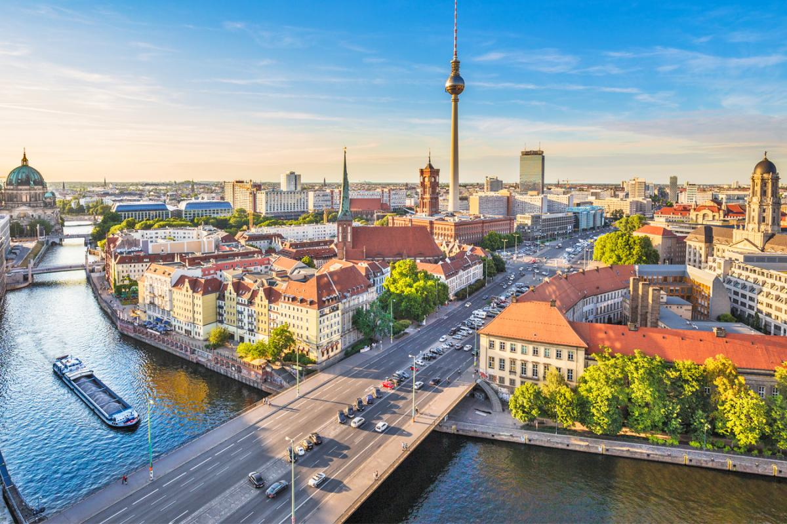
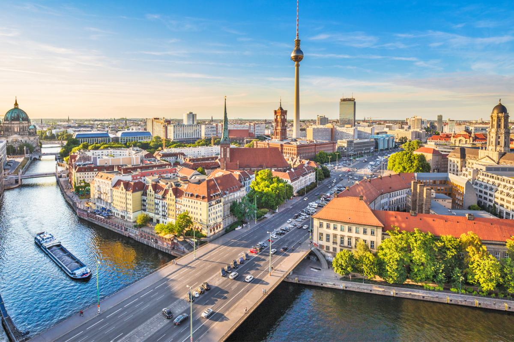
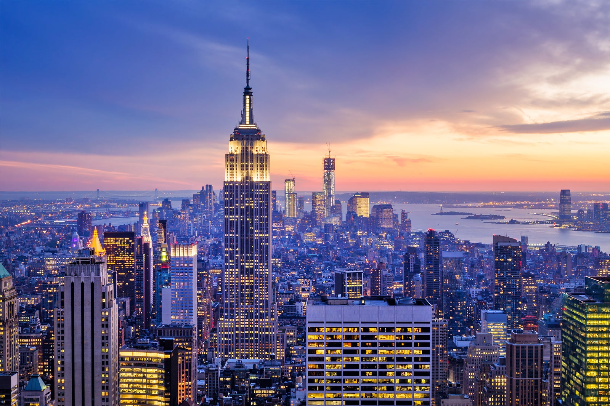
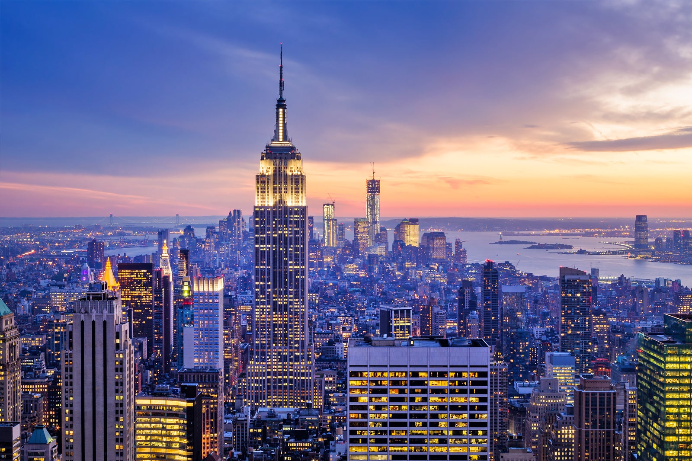

Paris
Paris (French pronunciation: [paʁi] (About this soundlisten)) is the capital and most populous city of France, with an estimated population of 2,175,601 residents as of 2018, in an area of more than 105 square kilometres (41 square miles). Since the 17th century, Paris has been one of Europe's major centres of finance, diplomacy, commerce, fashion, gastronomy, science, and arts.
Photos of paris below:


 Find out more about Paris
Find out more about Paris
London
London is the capital and largest city of England and the United Kingdom. It stands on the River Thames in south-east England at the head of a 50-mile (80 km) estuary down to the North Sea, and has been a major settlement for two millennia. The City of London, its ancient core and financial centre, was founded by the Romans as Londinium and retains boundaries close to its medieval ones.
Photos of london below:


 Find out more about London
Find out more about London
Berlin
Berlin (/bɜːrˈlɪn/ bur-LIN, German: [bɛʁˈliːn] (About this soundlisten)) is the capital and largest city of Germany by both area and population. Its 3.7 million inhabitants make it the European Union's most populous city, according to population within city limits. One of Germany's sixteen constituent states, Berlin is surrounded by the State of Brandenburg and contiguous with Potsdam, Brandenburg's capital.
Photos of berlin below:
 
Find out more about Berlin

Find out more about Berlin
New York
New York, often called New York City to distinguish it from New York State, or NYC for short, is the most populous city in the United States. With a 2020 population of 8,804,190 distributed over 300.46 square miles (778.2 km2), New York City is also the most densely populated major city in the United States.
Photos of New York below:
 

 Find out more about New York
Find out more about New York
Rome
Rome (Italian and Latin: Roma [ˈroːma] (About this soundlisten)) is the capital city of Italy. It is also the capital of the Lazio region, the centre of the Metropolitan City of Rome, and a special comune named Comune di Roma Capitale. With 2,860,009 residents in 1,285 km2 (496.1 sq mi), Rome is the country's most populated comune and the third most populous city in the European Union by population within city limits.